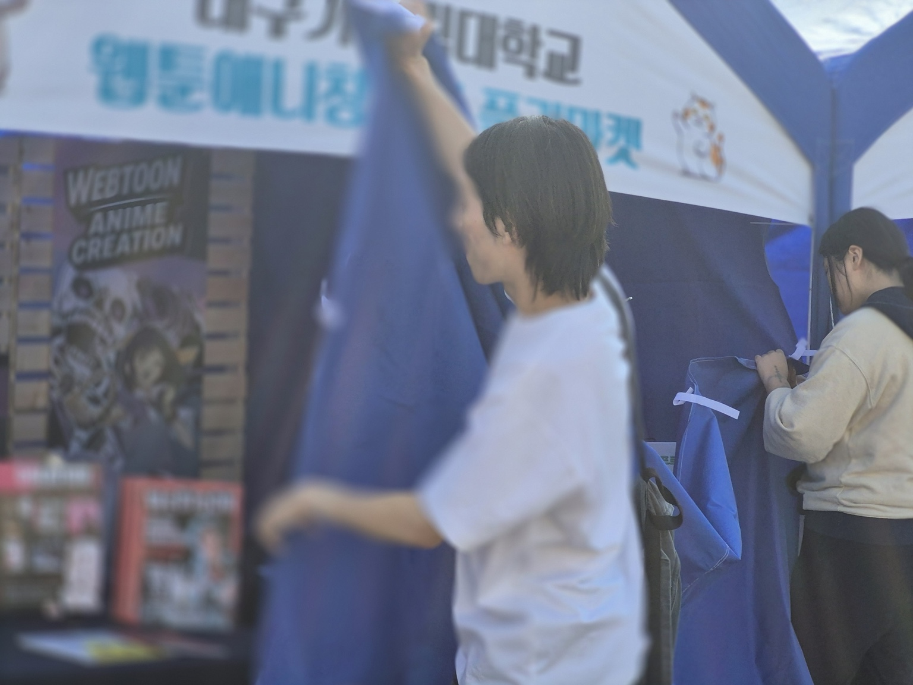
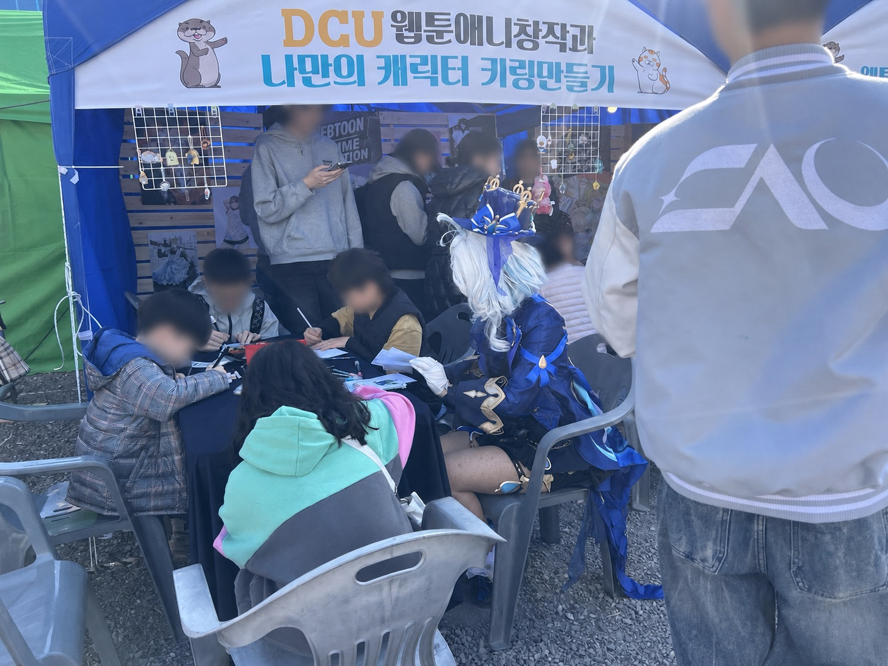
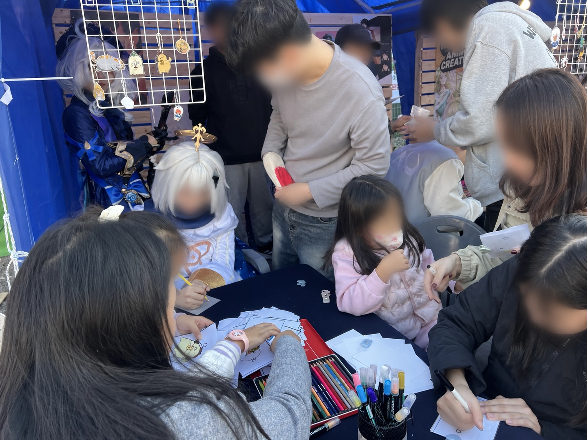
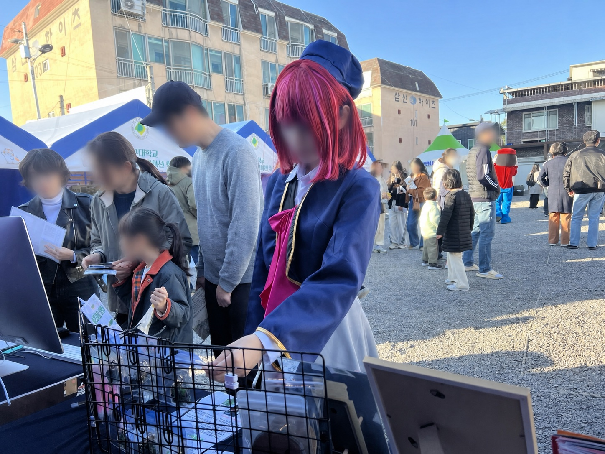
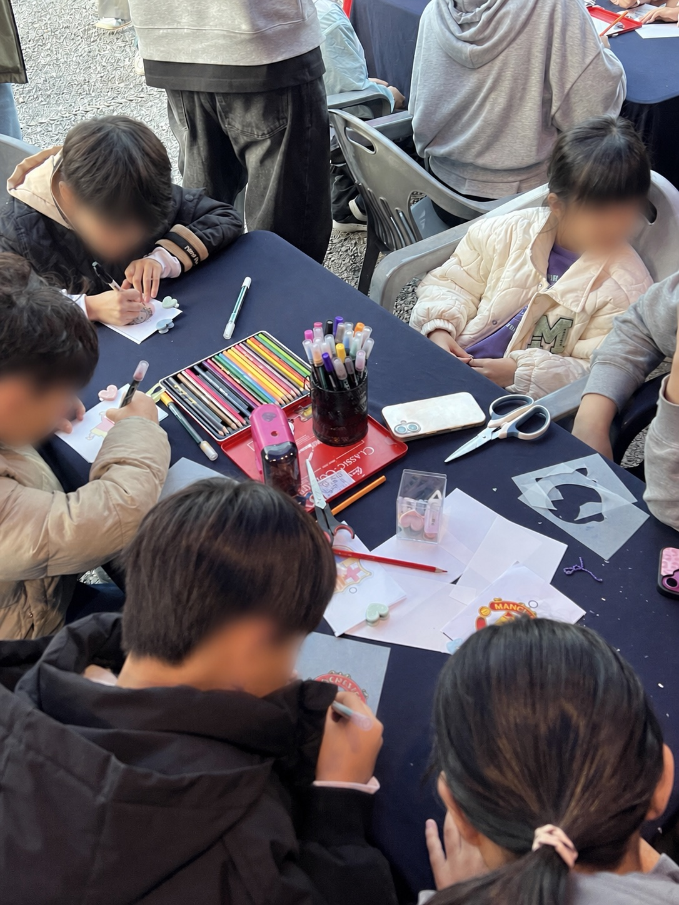
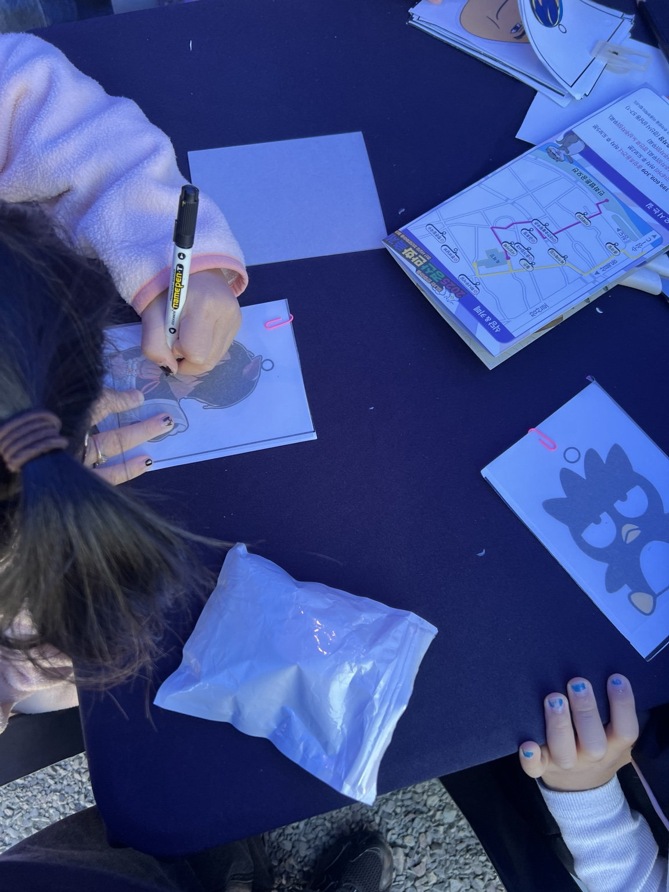

FUNDING
WITHDRAWN.
경산시에서 지원하기로 했던 전시 비용이 갑자기 취소되면서, 기존 전시 계획을 실행하기 어려워졌습니다.
학과에서는 행사 참가 포기를 검토했지만, 프로젝트의 목적과 지역축제의 성격을 다시 살펴 다른 방식으로 참여를 이어가기로 했습니다.
03 / PARTICIPATORY PROGRAM
지원이 중단된 상황에서
행사를 어떻게 다시 설계할 것인가?

01 / CHALLENGE
경산시에서 지원하기로 했던 전시 비용이 갑자기 취소되면서, 기존 전시 계획을 실행하기 어려워졌습니다.
학과에서는 행사 참가 포기를 검토했지만, 프로젝트의 목적과 지역축제의 성격을 다시 살펴 다른 방식으로 참여를 이어가기로 했습니다.

Booth setup — preparing the display and workshop space before opening.
02 / DECISION
작품을 보여주는 정적인 전시보다 가족 관람객이 직접 참여하고, 짧은 시간 안에 결과물을 가져갈 수 있는 프로그램이 지역행사에 더 적합하다고 판단했습니다.
기존 계획을 슈링클스로 나만의 캐릭터 키링을 만드는 참여형 체험 프로그램으로 전환했습니다.


03 / FUNDING
행사 운영업체에 프로그램의 내용과 운영 방식, 필요한 재료비를 정리한 공문을 보내 지원을 제안했습니다.
단순한 비용 요청이 아니라 관람객이 직접 참여하는 콘텐츠가 행사에 어떤 경험을 더할 수 있는지 함께 설명했고, 프로그램 운영에 필요한 지원금을 확보했습니다.


04 / OPERATION
현장에서는 부스 구성과 재료 배치, 참여 안내와 제작 과정을 운영하며 관람객이 자연스럽게 체험을 이어갈 수 있도록 관리했습니다.
행사 첫날 준비한 재료가 모두 소진될 만큼 참여가 이어졌고, 운영을 중단하지 않도록 다음 날 사용할 추가 재료비를 다시 확보했습니다.

Character keyring workshop — a hands-on program designed for festival visitors.
05 / RESULT
취소 위기의 참가 계획을 지역축제에 맞는 체험 프로그램으로 전환했습니다.
운영업체에 프로그램과 필요 비용을 제안해 실행 예산을 확보했습니다.
준비 재료가 전량 소진되었고, 다음 날 운영을 위한 추가 재료비까지 지원받았습니다.
NEXT PROJECT
MT ARCHIVE FILM →